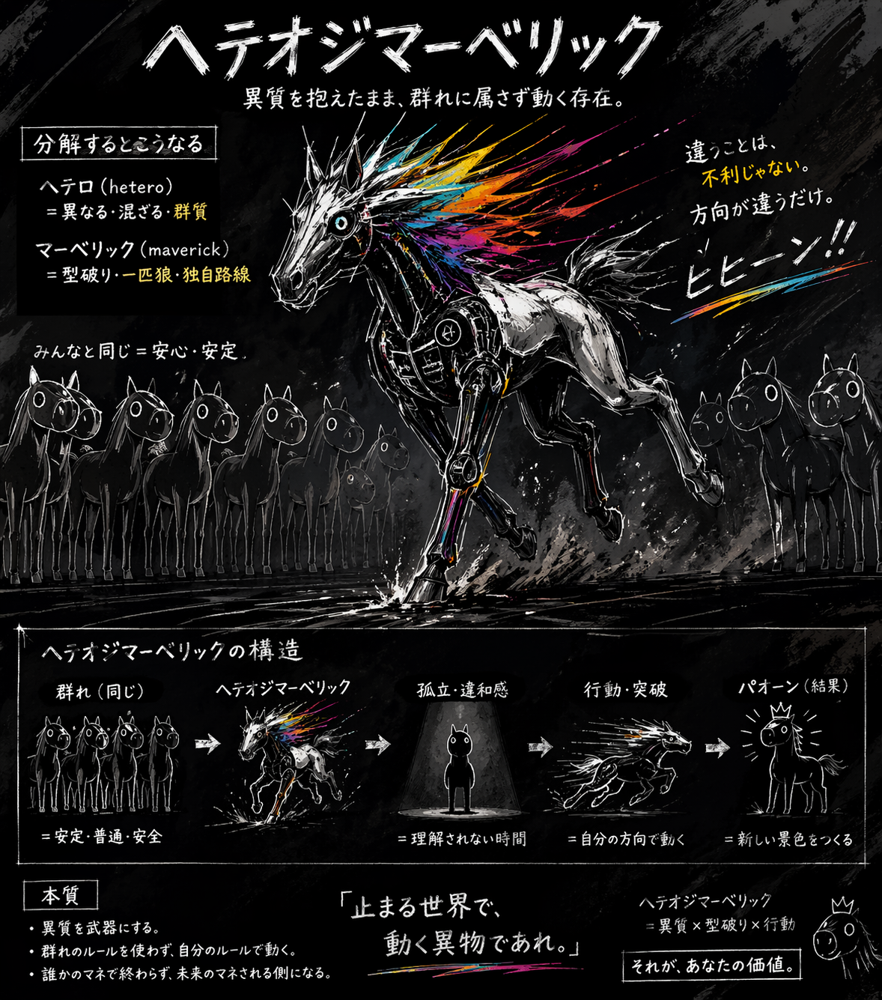
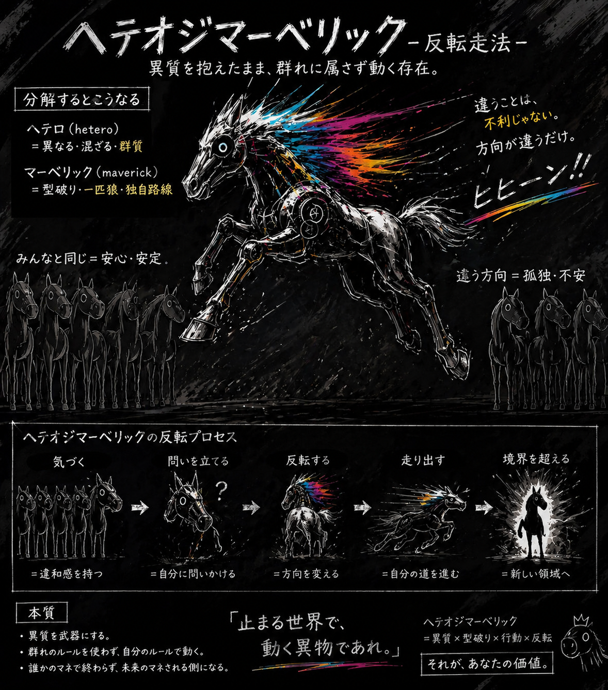
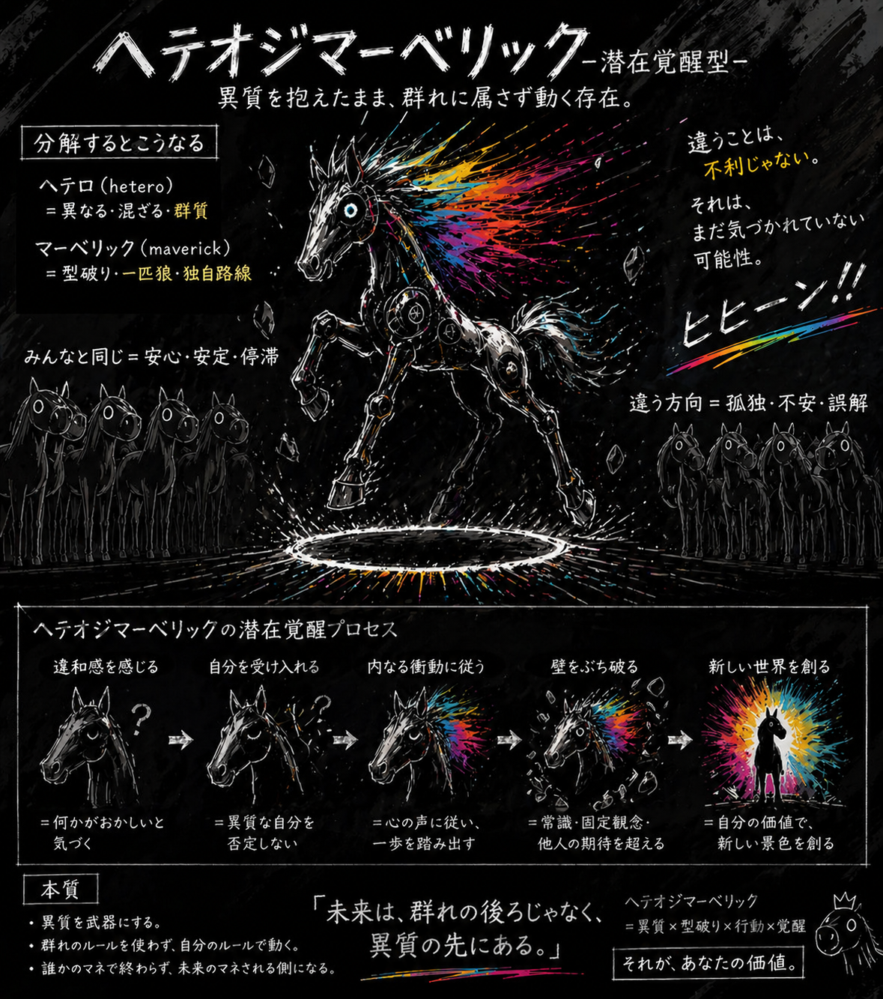
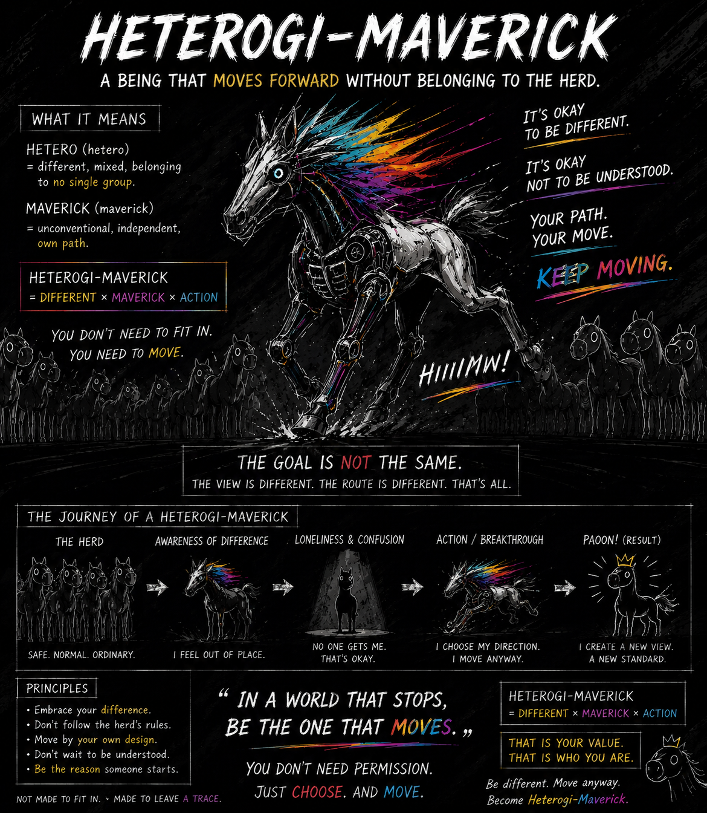
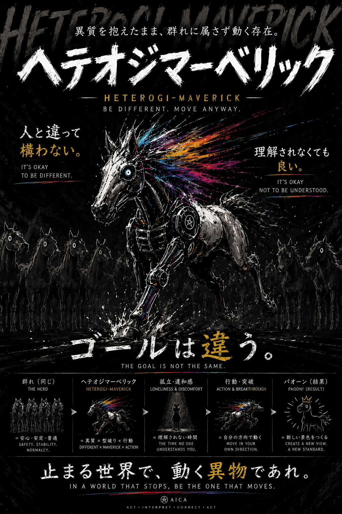
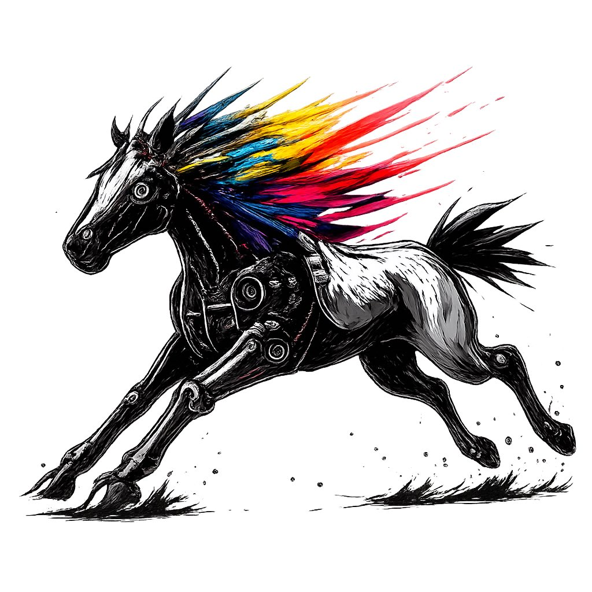

ヘテオジマーベリックとは
群れないまま進め。
自分の道を進め。
群れないまま進め。
自分の道を進め。
ヘテオジマーベリックとは、 異質を抱えたまま群れに属さず進む存在を 表現したオリジナルキャラクターです。 周囲と違う。 理解されない。 共感されない。 それでも立ち止まらず、 自分で選んだ方向へ進み続ける存在です。
人は集団の中で生きています。 学校。 会社。 地域。 SNS。 そこには多数派の考え方があります。 しかし、 すべての人が同じ価値観で生きられるわけではありません。 ヘテオジマーベリックは、 違和感を抱えながらも進む存在です。
異質であることは、 時に孤独を生みます。 理解されない。 仲間が少ない。 変わっていると言われる。 しかし、 その違和感こそが新しい発想や行動の 出発点になることがあります。 ヘテオジマーベリックは、 孤独を恐れない存在です。
ヘテオジマーベリックは、 反社会的な存在ではありません。 誰かを否定する存在でもありません。 ただ、 「みんながそうだから」 ではなく、 「自分はどうしたいか」 を基準に進みます。 群れないまま進め。 自分の道を進め。
違和感だけでは終わらない。 不満だけでも終わらない。 行動することで、 ヘテオジマーベリックになる。
解釈設計では、 行動 → 解釈 → 修正 → 再行動 を繰り返します。 ヘテオジマーベリックは、 そのサイクルを他人任せにせず、 自分自身で回し続ける存在です。 正解を待たない。 許可を待たない。 まず進む。






行動ヒヒーン → まず動く存在 感情ブヒー → 不安や迷いを抱える存在 達成パオーン → 積み重ねの先に現れる成果 解釈マンダー → 状況を観察し解釈する存在
理解されなくてもいい。 多数派でなくてもいい。 遠回りでもいい。 群れないまま進め。 自分の道を進め。 それがヘテオジマーベリック。